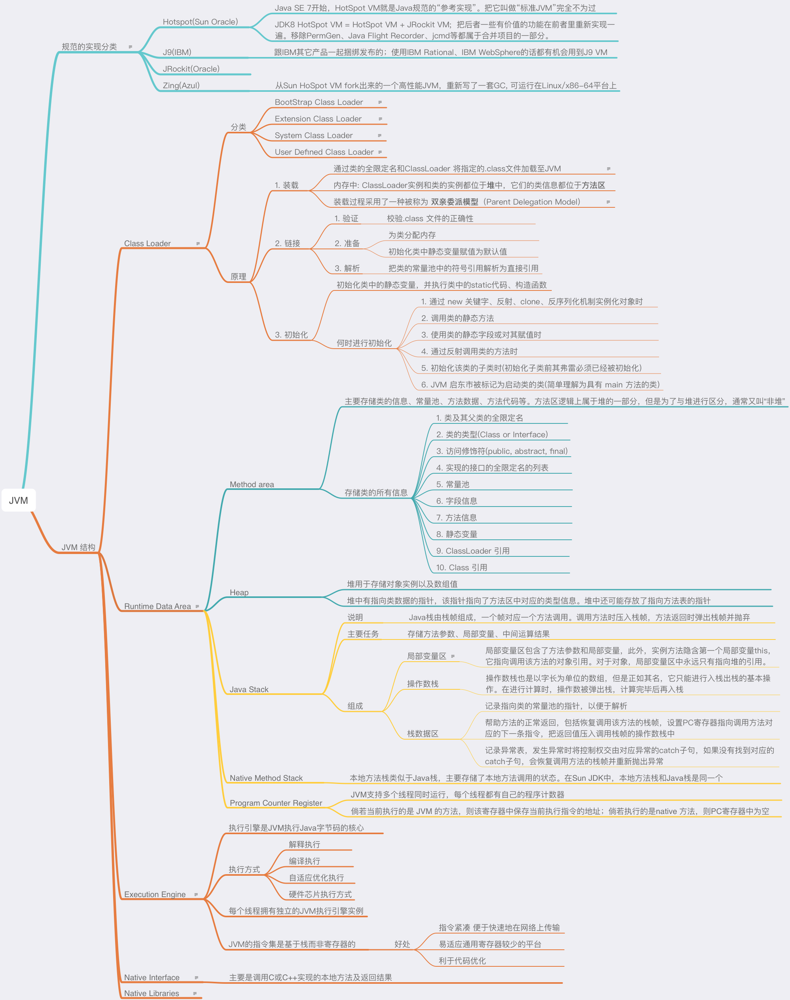
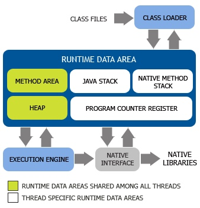
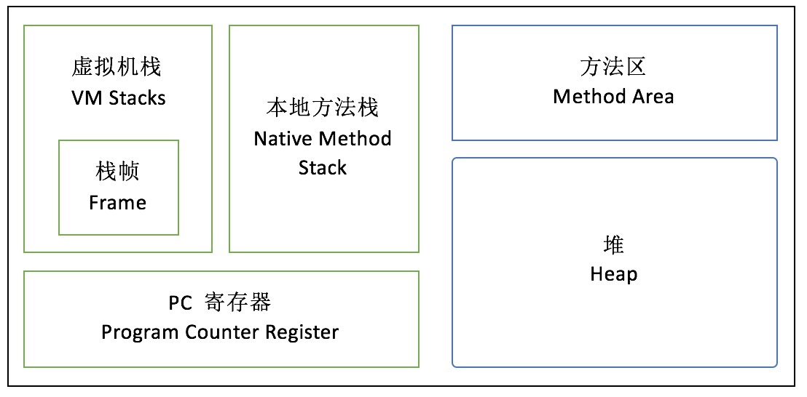

JVM结构与JVM内存模型的概念介绍
介绍 JVM 由 类加载器子系统、运行时数据区（内存空间）、执行引擎、本地方法接 组成及每部分的作用
介绍 JVM内存模型 由方法区、堆、Java栈(vm stack)、PC寄存器、本地方法栈 组成及每部分内容转自 浅析Java虚拟机结构与机制
JVM内幕：Java虚拟机详解
JVM内存模型你只要看这一篇就够了
JVM
GC及JVM参数
MindNode 图

JVM结构
JVM（Java Virtual Machine）
平时我们用的大多是Sun（现已被Oracle收购）JDK提供的JVM，但是JVM本身是一个规范，所以可以有多种实现，除了Hotspot外，还有诸如Oracle的JRockit、IBM的J9也都是非常有名的JVM

由图可看
JVM主要由类加载器子系统、运行时数据区（内存空间）、执行引擎、本地方法接等组成。
其中运行时数据区（就是jvm内存模型）由方法区、堆、Java栈(vm stack)、PC寄存器、本地方法栈组成。从上图中还可以看出，在内存空间中方法区和堆是所有Java线程共享的，
而Java栈、本地方法栈、PC寄存器则由每个线程私有，这会引出一些问题，后文会进行具体讨论。众所周知，Java语言具有跨平台的特性，这也是由JVM来实现的。更准确地说，是Sun利用JVM在不同平台上的实现帮我们把平台相关性的问题给解决了，这就好比是HTML语言可以在不同厂商的浏览器上呈现元素（虽然某些浏览器在对W3C标准的支持上还有一些问题）。同时，Java语言支持通过JNI（Java Native Interface）来实现本地方法的调用，但是需要注意到，如果你在Java程序用调用了本地方法，那么你的程序就很可能不再具有跨平台性，即本地方法会破坏平台无关性。
类加载子系统（Class Loader）
类加载器子系统负责加载编译好的.class字节码文件，并装入内存，使JVM可以实例化或以其它方式使用加载后的类。JVM的类加载子系统支持在运行时的动态加载，动态加载的优点有很多，例如可以节省内存空间、灵活地从网络上加载类，动态加载的另一好处是可以通过命名空间的分隔来实现类的隔离，增强了整个系统的安全性。
CLASSLOADER的分类：
启动类加载器（BootStrap Class Loader）：负责将放在
\lib目录中的，或被-Xbootclasspath参数所指定的路径中的，并且是虚拟机识别的（仅按照文件名识别，如rt.jar，名字不符合的类库即使放在lib目录中也不会被加载）类库加载到虚拟机内存中。启动类加载器无法被java程序直接引用，用户在编写自定义类加载器时，如果需要把加载请求委派给引导类加载器，直接使用null代替即可。 即Java的核心类都是由该ClassLoader加载。在Sun JDK中，这个类加载器是由C++实现的，并且在Java语言中无法获得它的引用。
扩展类加载器（Extension Class Loader）：这个加载器由sun.misc.Launche $ExtClassLoader 实现，负责加载
\lib\ext目录中的，或是被java.ext.dirs系统变量(-Djava.ext.dirs)所指定的路径中的所有类库，开发者可以直接使用扩展类加载器。 系统类加载器（System Class Loader）：应用程序类加载器（Application ClassLoader）由sun.misc.Launche $App-ClassLoader实现。由于这个类加载器是ClassLoader中的getSystemClassLoader()方法的返回值，所以一般也称它为系统类加载器。负责加载用户类路径（Class-Path）上所指定的类库，开发者可以直接使用这个加载器，如果应用程序中没有自定义过自己的类加载器，一般情况下这就是程序中默认的类加载器。
负责加载启动参数中指定的Classpath中的jar包及目录，通常我们自己写的Java类也是由该ClassLoader加载。在Sun JDK中，系统类加载器的名字叫AppClassLoader。
用户自定义类加载器（User Defined Class Loader）：由用户自定义类的加载规则，可以手动控制加载过程中的步骤。
CLASSLOADER的工作原理：
装载：
通过类的全限定名和ClassLoader加载类，主要是将指定的.class文件加载至JVM。当类被加载以后，在JVM内部就以“类的全限定名+ClassLoader实例ID”来标明类。
在内存中，ClassLoader实例和类的实例都位于堆中，它们的类信息都位于方法区。
装载过程采用了一种被称为 “双亲委派模型（Parent Delegation Model）”的方式，当一个ClassLoader要加载类时，它会先请求它的双亲ClassLoader（其实这里只有两个ClassLoader，所以称为父ClassLoader可能更容易理解）加载类，而它的双亲ClassLoader会继续把加载请求提交再上一级的ClassLoader，直到启动类加载器。只有其双亲ClassLoader无法加载指定的类时，它才会自己加载类。
双亲委派模型是JVM的第一道安全防线，它保证了类的安全加载，这里同时依赖了类加载器隔离的原理：不同类加载器加载的类之间是无法直接交互的，即使是同一个类，被不同的ClassLoader加载，它们也无法感知到彼此的存在。这样即使有恶意的类冒充自己在核心包（例如java.lang）下，由于它无法被启动类加载器加载，也造成不了危害。
由此也可见，如果用户自定义了类加载器，那就必须自己保障类加载过程中的安全。
链接：
链接的任务是把二进制的类型信息合并到JVM运行时状态中去。链接分为以下三步：
- 验证：校验.class文件的正确性，确保该文件是符合规范定义的，并且适合当前JVM使用。
- 准备：为类分配内存，同时初始化类中的静态变量赋值为默认值。
- 解析（可选）：主要是把类的常量池中的符号引用解析为直接引用，这一步可以在用到相应的引用时再解析。
初始化：
初始化类中的静态变量，并执行类中的static代码、构造函数。JVM规范严格定义了何时需要对类进行初始化：
- 通过new关键字、反射、clone、反序列化机制实例化对象时。
- 调用类的静态方法时。
- 使用类的静态字段或对其赋值时。
- 通过反射调用类的方法时。
- 初始化该类的子类时（初始化子类前其父类必须已经被初始化）。
- JVM启动时被标记为启动类的类（简单理解为具有main方法的类）。
运行时数据区（内存空间）（JVM内存模型）

(线程私有) 虚拟机栈（VM Stack）（Java栈（Java Stack））
Java栈由栈帧组成，一个帧对应一个方法调用。调用方法时压入栈帧，方法返回时弹出栈帧并抛弃。
Java栈的主要任务是存储方法参数、局部变量、中间运算结果，并且提供部分其它模块工作需要的数据。
前面已经提到Java栈是线程私有的，这就保证了线程安全性，使得程序员无需考虑栈同步访问的问题，只有线程本身可以访问它自己的局部变量区。
它分为三部分：局部变量区、操作数栈、帧数据区。
局部变量区
局部变量区是以字长为单位的数组，在这里，byte、short、char类型会被转换成int类型存储，除了long和double类型占两个字长以外，其余类型都只占用一个字长。特别地，boolean类型在编译时会被转换成int或byte类型，boolean数组会被当做byte类型数组来处理。局部变量区也会包含对象的引用，包括类引用、接口引用以及数组引用。
局部变量区包含了方法参数和局部变量，此外，实例方法隐含第一个局部变量this，它指向调用该方法的对象引用。对于对象，局部变量区中永远只有指向堆的引用。
操作数栈
操作数栈也是以字长为单位的数组，但是正如其名，它只能进行入栈出栈的基本操作。在进行计算时，操作数被弹出栈，计算完毕后再入栈。
帧数据区
帧数据区的任务主要有：
- 记录指向类的常量池的指针，以便于解析。
- 帮助方法的正常返回，包括恢复调用该方法的栈帧，设置PC寄存器指向调用方法对应的下一条指令，把返回值压入调用栈帧的操作数栈中。
- 记录异常表，发生异常时将控制权交由对应异常的catch子句，如果没有找到对应的catch子句，会恢复调用方法的栈帧并重新抛出异常。
局部变量区和操作数栈的大小依照具体方法在编译时就已经确定。调用方法时会从方法区中找到对应类的类型信息，从中得到具体方法的局部变量区和操作数栈的大小，依此分配栈帧内存，压入Java栈。
(线程私有) 本地方法栈（Native Method Stack）
本地方法栈类似于Java栈，主要存储了本地方法调用的状态。在Sun JDK中，本地方法栈和Java栈是同一个。
(线程私有) PC 寄存器(程序计数器)
PC 寄存器，也叫程序计数器。JVM支持多个线程同时运行，每个线程都有自己的程序计数器。倘若当前执行的是 JVM 的方法，则该寄存器中保存当前执行指令的地址；倘若执行的是native 方法，则PC寄存器中为空。
(线程共享) 方法区（Method Area）
方法区也是所有线程共享。主要用于存储类的信息、常量池、方法数据、方法代码等。方法区逻辑上属于堆的一部分，但是为了与堆进行区分，通常又叫“非堆”。
类型信息和类的静态变量都存储在方法区中。方法区中对于每个类存储了以下数据：
- 类及其父类的全限定名（java.lang.Object没有父类）
- 类的类型（Class or Interface）
- 访问修饰符（public, abstract, final）
- 实现的接口的全限定名的列表
- 常量池
- 字段信息
- 方法信息
- 静态变量
- ClassLoader引用
- Class引用
可见类的所有信息都存储在方法区中。
由于方法区是所有线程共享的，所以必须保证线程安全，举例来说，如果两个类同时要加载一个尚未被加载的类，那么一个类会请求它的ClassLoader去加载需要的类，另一个类只能等待而不会重复加载此外为了加快调用方法的速度，通常还会为每个非抽象类创建私有的方法表，方法表是一个数组，存放了实例可能被调用的实例方法的直接引用。方法表对于多态有非常重要的意义，具体可以参照《浅谈多态机制的意义及实现》一文中“多态的实现”一节。
在Sun JDK中，方法区对应了持久代（Permanent Generation），默认最小值为16MB，最大值为64MB。
(线程共享) 堆（Heap）
堆用于存储对象实例以及数组值。堆中有指向类数据的指针，该指针指向了方法区中对应的类型信息。堆中还可能存放了指向方法表的指针。
堆是所有线程共享的，所以在进行实例化对象等操作时，需要解决同步问题。
此外，堆中的实例数据中还包含了对象锁，并且针对不同的垃圾收集策略，可能存放了引用计数或清扫标记等数据。在堆的管理上，Sun JDK从1.2版本开始引入了分代管理的方式。主要分为新生代、旧生代。分代方式大大改善了垃圾收集的效率。
新生代（New Generation）
大多数情况下新对象都被分配在新生代中，新生代由Eden Space和两块相同大小的Survivor Space组成，后两者主要用于Minor GC时的对象复制（Minor GC的过程在此不详细讨论）。
JVM在Eden Space中会开辟一小块独立的TLAB（Thread Local Allocation Buffer）区域用于更高效的内存分配，我们知道在堆上分配内存需要锁定整个堆，而在TLAB上则不需要，JVM在分配对象时会尽量在TLAB上分配，以提高效率。
旧生代（Old Generation/Tenuring Generation）
在新生代中存活时间较久的对象将会被转入旧生代，旧生代进行垃圾收集的频率没有新生代高。
执行引擎
执行引擎是JVM执行Java字节码的核心
执行方式主要分为解释执行、编译执行、自适应优化执行、硬件芯片执行方式JVM的指令集是基于栈而非寄存器的，这样做的好处在于可以使指令尽可能紧凑，便于快速地在网络上传输（别忘了Java最初就是为网络设计的），同时也很容易适应通用寄存器较少的平台，并且有利于代码优化，由于Java栈和PC寄存器是线程私有的，线程之间无法互相干涉彼此的栈。
每个线程拥有独立的JVM执行引擎实例JVM指令由单字节操作码和若干操作数组成。对于需要操作数的指令，通常是先把操作数压入操作数栈，即使是对局部变量赋值，也会先入栈再赋值。注意这里是“通常”情况，之后会讲到由于优化导致的例外。
1. 解释执行
和一些动态语言类似，JVM可以解释执行字节码。Sun JDK采用了token-threading的方式，感兴趣的同学可以深入了解一下。
解释执行中有几种优化方式：
栈顶缓存
将位于操作数栈顶的值直接缓存在寄存器上，对于大部分只需要一个操作数的指令而言，就无需再入栈，可以直接在寄存器上进行计算，结果压入操作数站。这样便减少了寄存器和内存的交换开销。
部分栈帧共享
被调用方法可将调用方法栈帧中的操作数栈作为自己的局部变量区，这样在获取方法参数时减少了复制参数的开销。
执行机器指令
在一些特殊情况下，JVM会执行机器指令以提高速度。
2. 编译执行
为了提升执行速度，Sun JDK提供了将字节码编译为机器指令的支持，主要利用了JIT（Just-In-Time）编译器在运行时进行编译，它会在第一次执行时编译字节码为机器码并缓存，之后就可以重复利用。Oracle JRockit采用的是完全的编译执行。
3. 自适应优化执行
自适应优化执行的思想是程序中10%~20%的代码占据了80%~90%的执行时间，所以通过将那少部分代码编译为优化过的机器码就可以大大提升执行效率。自适应优化的典型代表是Sun的Hotspot VM，正如其名，JVM会监测代码的执行情况，当判断特定方法是瓶颈或热点时，将会启动一个后台线程，把该方法的字节码编译为极度优化的、静态链接的C++代码。当方法不再是热区时，则会取消编译过的代码，重新进行解释执行。
自适应优化不仅通过利用小部分的编译时间获得大部分的效率提升，而且由于在执行过程中时刻监测，对内联代码等优化也起到了很大的作用。由于面向对象的多态性，一个方法可能对应了很多种不同实现，自适应优化就可以通过监测只内联那些用到的代码，大大减少了内联函数的大小。
JDK编译模式：Client和Server模式
Sun JDK在编译上采用了两种模式：Client和Server模式。
前者较为轻量级，占用内存较少。后者的优化程序更高，占用内存更多。在Server模式中会进行对象的逃逸分析，即方法中的对象是否会在方法外使用，如果被其它方法使用了，则该对象是逃逸的。对于非逃逸对象，JVM会在栈上直接分配对象（所以对象不一定是在堆上分配的），线程获取对象会更加快速，同时当方法返回时，由于栈帧被抛弃，也有利于对象的垃圾收集。Server模式还会通过分析去除一些不必要的同步，感兴趣的同学可以研究一下Sun JDK 6引入的Biased Locking机制。
此外，执行引擎也必须保证线程安全性，因而JMM（Java Memory Model）也是由执行引擎确保的。
本地方法接口
主要是调用C或C++实现的本地方法及返回结果